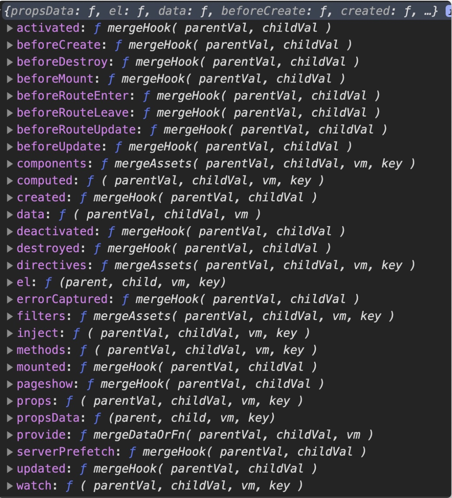

让你更了解VUE（业务场景方向）
- hookEvent，内部监听生命周期函数
- hookEvent，外部监听生命周期函数
- watch的使用，让组件联动更容易实现
- 如何二次包装组件$attrs 与 $listeners
- 实现前端工程自动化require.context
- .sync,更优雅的实现数据双向绑定
- 了解Vue合并策略
- 自定义生命周期函数
- 跨越组件的传值（element-ui中时如何使用）
- content-visibility: 一个可以提高渲染性能的css属性
- 对CJK复合语言输入优化
hookEvent，内部监听生命周期函数
场景：组件跟随浏览器窗口大小，合理调整（响应窗口）
hookEvent，内部监听生命周期函数
场景：组件跟随浏览器窗口大小，合理调整（响应窗口）
hookEvent，外部监听生命周期函数
想在外部监听组件的生命周期函数，如（第三方组件，需要监听第三方组件数据的变化）
场景，如何二次包装组件（n多的props、n多的enevts）
$attrs 与 $listeners，二次包装组件就靠它了
$attrs:
当组件在调用时传入的属性没有在props里面定义时，传入的属性将被绑定到$attrs属性内（class与style除外，他们会挂载到组件最外层元素上）。并可通过v-bind="$attrs"传入到内部组件中
$listeners:
当组件被调用时，外部监听的这个组件的所有事件都可以通过$listeners获取到。并可通过v-on="$listeners"传入到内部组件中。
require.context实现前端工程自动化
require.context是一个webpack提供的Api,通过执行require.context函数获取一个特定的上下文,主要是用于实现自动化导入模块。
使用.sync,更优雅的实现数据双向绑定
有时双向绑定还是很好用的
使用.sync,更优雅的实现数据双向绑定
有时双向绑定还是很好用的
在Vue3.0中为了实现统一，实现了让一个组件可以拥有多个v-model，同时删除掉了.sync。
在Vue3.0中为了实现统一，实现了让一个组件可以拥有多个v-model，同时删除掉了.sync。
了解Vue合并策略
在Vue中，提供了一个api, Vue.config.optionMergeStrategies,可以通过这个api去自定义选项的合并策略。

通过合并策略自定义生命周期函数
场景：假如页面有许多定时器，ajax轮询还有动画，如果这种页面开多了，浏览器就变得卡了，这时候我就想如果能在用户切换页签时候将这些都停掉，切回时在重新运行。基础实现
通过合并策略自定义生命周期函数
刚刚的实现太繁琐了，组件有没有类似pageHidden 与
pageVisible这样生命周期可以用呢？好吧，没有我们就自己实现吧。
provide 与 inject，跨越组件的传值，React/Context
el-form上面我们指定了一个属性size="small"，然后有没有发现表单里面的所有表单元素以及按钮的 size都变成了small,这个是怎么做到的？
provide 与 inject，跨越组件的传值，React/Context
ElForm组件
provide 与 inject，跨越组件的传值，React/Context
ElFormItem组件
provide 与 inject，跨越组件的传值，React/Context
ElButton组件
content-visibility: 一个可以提高渲染性能的css属性
content-visibility: 一个可以提高渲染性能的css属性
content-visibility: 一个可以提高渲染性能的css属性
因为content-visibility通过跳过屏幕外的内容渲染来缩短初始加载时间
contain-intrinsic-size指定元素的自然大小，避免滚动条的大小会发生变化带来的抖动感
google
Input 输入框的优化对CJK语言/element-ui
compositionstart > compositionupdate > input > compositionend
这些可见字符的输入可能需要一连串的键盘操作、语音识别或者点击输入法的备选词